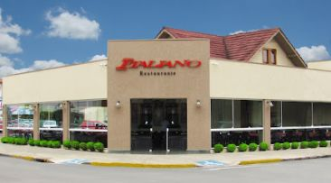
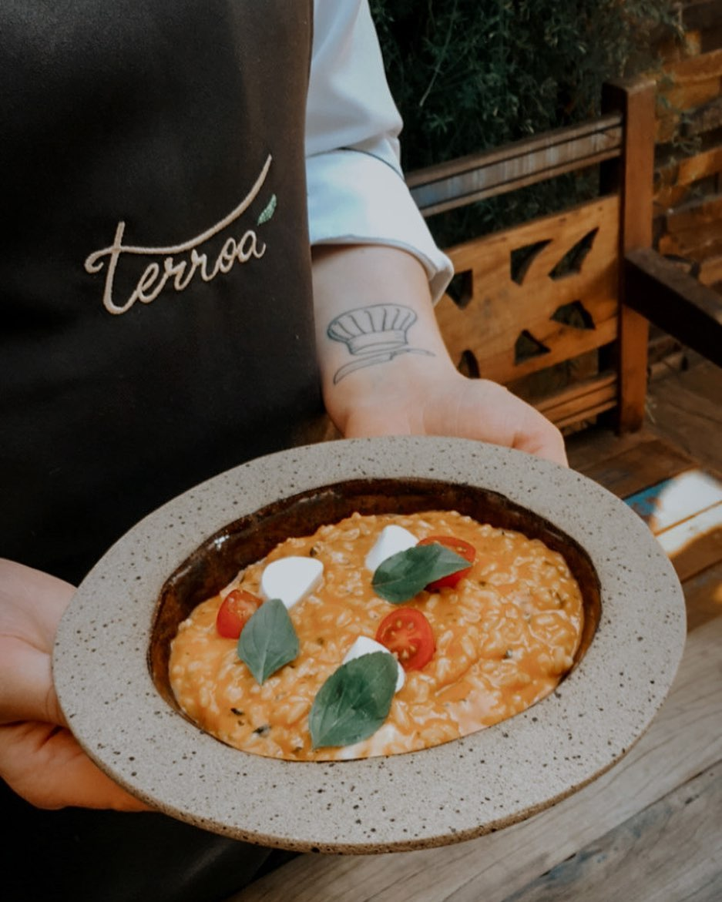
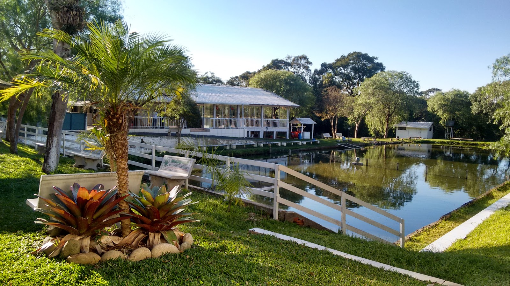
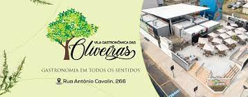
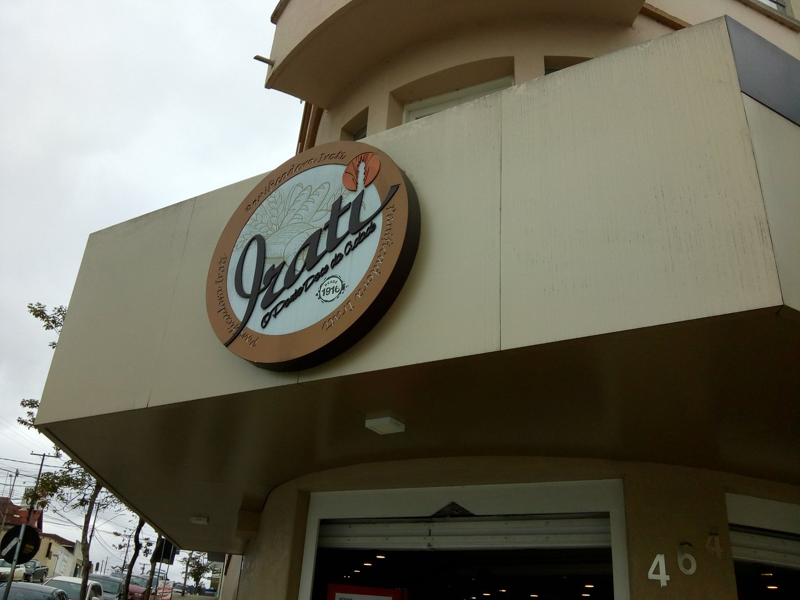

-
Italiano
Restaurante de tradição, localizado no centro de Irati, funciona de Terça a Domingo para almoço e jantar, trazendo dezenas de opções.
Facebook -
Terroá
Restaurante moderno, com cardápio cheio de opções para surpreender. Transforma cada refeição em uma experiência.
Facebook -
Camilo
Além de aconchegante, a Peixaria Camilo conta com diversos pratos, como camarão e peixes de água (Peixaria Camilo, 2022).
Facebook -
Santo Fole
Uma experiência gastronômica e cultural no centro de irati! Música regional gaúcha, chopp gelado, e comida de boteco! (Santo Fole, 2022)
Facebook
-
Vila das Oliveiras
Um novo conceito de lazer e gastronômica em Irati! (Vila das Oliveiras, 2022) Conjunto de opções gastronômicas em um ambiente agradável.
Facebook -
Panificadora Irati
Oferece os serviços de lanchonete, panificadora, confeitaria, café colonial, almoço, encomenda para festas e eventos (Panificadora Irati, 2022). Tradicional na cidade, possui atendimento de exelência e produtos de qualidade há anos.
Facebook -
Panificadora Italiano
A Panificadora e Confeitaria mais Saborosa da cidade! (Panificadora Italiano, 2022). Panificadora e confeitaria da cidade de irati, com produtos clássicos em seu cardápio.
Facebook
Restaurantes
O melhor da gastronomia
-
Parque Aquático
-
CineIrati
-
Park Dance
-
Eventos